Hadoop gRPC Replicator
Корпоративная высокоскоростная межкластерная репликация HDFS и Hive Metastore с иерархическим шейпером WAN и защитой от Split-Brain в Disaster Recovery
Прямой потоковый протокол gRPC/HTTP/2 на Netty минуя MapReduce и YARN. Чанки 4 МБ, сжатие Zstd/LZ4 и Tar-Streaming мелких файлов.
Hierarchical Token Bucket: строгий рантайм-контроль полосы Global ➔ DC-DC ➔ Cluster-to-Cluster с изменением квот менее чем за 1 секунду.
Failover Hub: аварийный Kill-Switch (сетевой барьер 0 МБ/с), безопасный откат Unfence без перезаписи резерва и 1-Click Reverse Replication.
Потоковый захват DDL из `NOTIFICATION_LOG`, распределенный эксклюзивный лизинг Inotify HA, Non-ACID Gate и HDFS Federation NameService translation.
Kerberos SPNEGO SSO, LDAP, изоляция контекстов, Proxy User doAs имперсонация с полным аудитом в Apache Ranger Audit Log.
Svelte 5 SPA-консоль: интерактивные фильтры, моментальная скорость передачи (МБ/с), расчет ETA, аудит истории и темная тема.
Почему Apache DistCp больше не решает задачи бизнеса?
Классический стек межкластерного копирования Hadoop (DistCp на базе MapReduce) морально устарел для распределенных Data Lake
| Фактор деградации | Проблема классического DistCp (MapReduce) | Архитектурный ответ Hadoop Replicator |
|---|---|---|
| Конкуренция за YARN слоты | DistCp запускает тяжелый MR Job. В часы пик задачи репликации отбирают vCPU/RAM у боевых Spark/Flink пайплайнов или часами висят в очередях. | Zero YARN Footprint Автономные легковесные gRPC-агенты на узлах DataNode. 100% ресурсов YARN остаются бизнесу. |
| Неуправляемый WAN канал | DistCp забивает сетевую магистраль между дата-центрами. Нет контроля суммарного пула или лимитов пар ЦОД; деградируют клиентские API. | Hierarchical Token Bucket Рантайм-шейпинг: Global + DC-DC + Cluster. Изменение квот применяется за < 1 сек без перезапуска. |
| Шторм мелких файлов (< 1 MB) | Миллионы мелких файлов вызывают перегрузку NameNode RPC и дисковый bottleneck из-за открытия сотен тысяч отдельных сетевых сессий. | Tar-Streaming на лету Виртуальная упаковка мелких файлов в поток с распаковкой прямо в память приемника. Zero-Staging. |
| Метаданные Hive Metastore | DistCp копирует только сырые файлы HDFS. Схемы таблиц и партиции требуют отдельных самописных скриптов выгрузки DDL. | Потоковый HMS CDC Автоматический захват событий изменения схемы из Hive `NOTIFICATION_LOG` и мгновенная репликация. |
| Катастрофа при Split-Brain | При аварии ЦОД нет сетевого ограждения. Случайный авто-запуск DistCp после восстановления затирает свежие данные, накопленные на резерве! | DR Failover Hub Сетевое ограждение 0 МБ/с (Kill-Switch), безопасный Unfence и 1-Click Reverse Replication (`DC2 ➔ DC1`). |
Архитектура всей конструкции: Control Plane vs Data Plane
Оркестратор координирует процессы, а передача терабайт данных идет строго по прямой gRPC-магистрали между агентами дата-центров
- Технологии: Java 21, Spring Boot 3.3.4, Spring Data JPA.
- Порт: `8005` (REST API, SSE, статика Svelte 5).
- Планировщик: Встроенный Cron Scheduler (`ReplicationScheduler`) для периодических регламентных запусков.
- Координатор квот: Централизованный `TokenBucketThrottler` для раздачи лимитов полосы.
- Inotify Lease Coordinator: Распределенный эксклюзивный лизинг CDC схем для предотвращения дублирования потоков.
- State Machine аварийного переключения: Управление фазами Disaster Recovery и снимками Snapshot.
- Технологии: Java 21, gRPC / Protobuf, Netty, Hadoop Client API.
- Порт gRPC: `50051` (mTLS / TLSv1.3 шифрование канала).
- Стриминг чанками: Передача файлов фиксированными блоками по 4 МБ со сквозным SHA-256.
- Прямой HDFS I/O: Чтение из локального HDFS источника и прямая запись в HDFS приемника через `dfs.data.transfer.protection`.
- HMS Thrift Connector: Локальное обращение к Hive Metastore по LAN (Thrift 9083).
- Автономность: Агенты продолжают передачу текущего чанка даже при кратковременном рестарте оркестратора.
Топология ЦОД и иерархический шейпер (Hierarchical Token Bucket)
Многоуровневый контроль пропускной способности WAN-каналов исключает деградацию бизнес-трафика компании
delay = max(delay_global, delay_dc_dc, delay_hdfs_hdfs)
Воркер проверяет наличие токенов на всех уровнях и засыпает на время, продиктованное самым узким местом маршрута.
При изменении лимита оператором в веб-консоли оркестратор обновляет бакеты в памяти. Все воркеры в обоих ЦОД подхватывают новую скорость без рестарта задач.
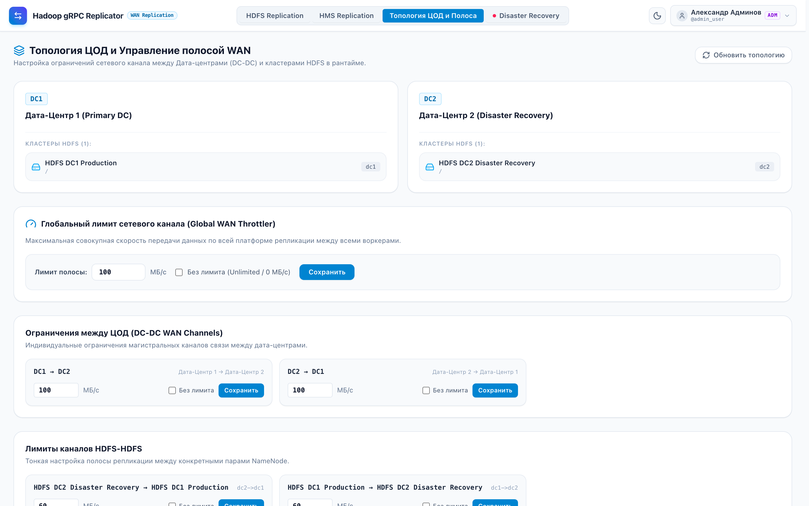
Единый вход (SPNEGO SSO / LDAP) и ролевая модель
Бесшовная интеграция в корпоративный домен безопасности платформы Hadoop Explorer
- Kerberos SPNEGO SSO: мгновенный вход в 1 клик по билету Active Directory / FreeIPA;
- LDAP / AD Form Login: авторизация по корпоративному логину и паролю;
- Демо-профили: быстрое тестирование ролевого разделения прав прямо с экрана входа.
- ADMIN (`admin_user`): полный контроль, Kill-Switch, лимиты, имперсонация doAs;
- WRITER (`de_user`): создание и запуск своих задач репликации в рамках квот;
- READER (`analyst_user`): режим наблюдателя (Read-Only) без права мутаций.
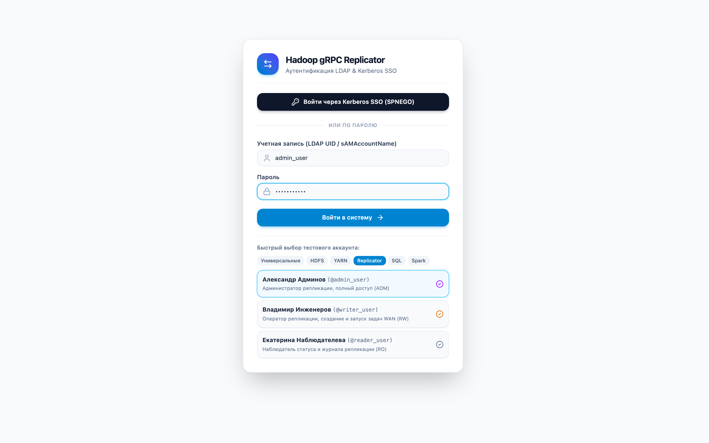
Протокол передачи данных, Zero-Staging и Tar-Streaming
Инженерные решения для надежной и быстрой передачи терабайтных объемов без мусора в хранилище
Файлы размером < 1 МБ объединяются в виртуальный TAR-поток на лету в оперативной памяти воркера:
- Передаются единым непрерывным gRPC-стримом;
- Приемник на лету распаковывает стрим и пишет файлы прямо в HDFS;
- Исключаются промежуточные файлы на локальных дисках серверов (Zero Local Disk I/O).
Одиночные файлы пишутся сразу в целевой кластер HDFS:
- Запись во временный файл: `targetPath + "._staging_" + jobId`;
- Потоковый расчет контрольной суммы SHA-256;
- При совпадении хэша — мгновенный атомарный `fs.rename()`.
Встроенное почанковое сжатие трафика в канале WAN:
- Алгоритмы Zstandard (Zstd) и LZ4;
- Экономия от 40% до 80% полосы на CSV, JSON, логах и дампах;
- Автоматическое отключение для Parquet/ORC (чтобы не тратить CPU).
Защита от накопления мусора в распределенном хранилище:
- Реактивная очистка при ошибках gRPC (`onError`);
- Предстартовая очистка незавершенных staging-файлов;
- Фоновый сборщик мусора каждые 15 минут удаляет файлы старше 30 мин;
- Исключение staging-файлов из Diff-манифестов.
Главная панель управления HDFS и создание задач
Интуитивный веб-интерфейс оператора со счетчиками статусов, расчетом ETA и Kerberos doAs
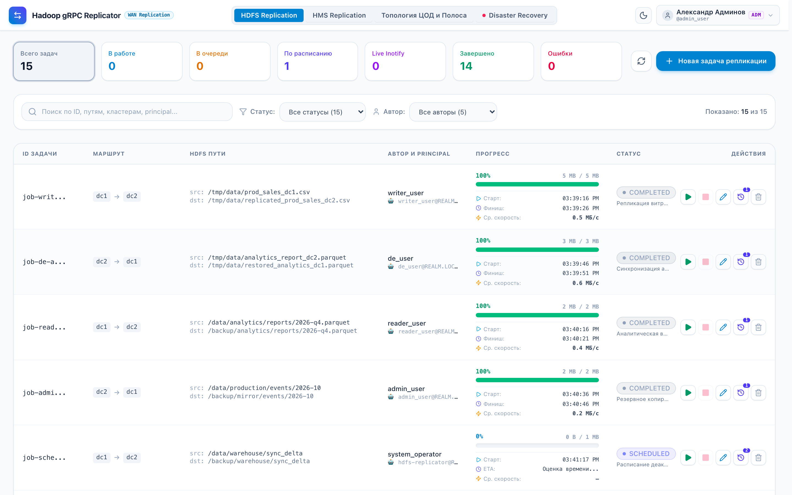
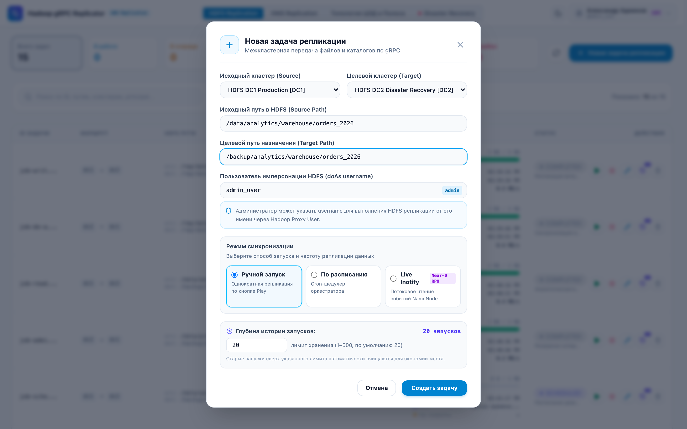
История запусков задачи и политика хранения (Retention)
Полная прозрачность каждого периодического запуска с контролем объема базы данных
- Хронология: номер запуска (`#1`, `#2`...), статус и источник (Шедулер / Вручную);
- Тайминги: время старта, завершения и длительность с точностью до секунды;
- Метрики: переданный объем и эффективная скорость передачи (⚡ МБ/с).
- Возможность задать лимит хранения (по умолчанию: 20 записей, до 500);
- Кнопка «Применить лимит» мгновенно удаляет устаревшие записи из базы данных;
- База данных оркестратора защищена от разрастания при ежеминутных джобах.
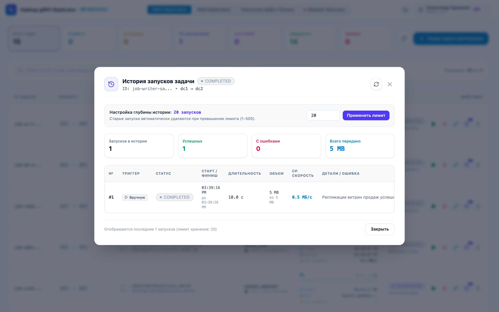
Репликация Hive Metastore: CDC и Inotify Lease HA
Непрерывная синхронизация баз и таблиц Hive без потери позиции и гонок между агентами
- Агент источника непрерывно опрашивает `NOTIFICATION_LOG` Hive Metastore;
- События `CREATE_TABLE`, `ALTER_TABLE`, `ADD_PARTITION`, `DROP_PARTITION` пачками передаются по gRPC целевому агенту;
- Целевой агент применяет DDL через локальный Thrift RPC с гарантией `deleteData = false`.
- Каждая схема захватывается ровно одним агентом (`assigned_agent_id`, аренда на 60 сек);
- Агент непрерывно продлевает аренду при отправке прогресса;
- При сбое воркера другой агент мгновенно перехватывает стрим с сохраненного `last_processed_event_id`.
- Автоматическая трансляция URI в метаданных таблиц и партиций: `hdfs://ns-dc1/...` ➔ `hdfs://ns-dc2/...`;
- Поддержка правил сопоставления федерации (`federation-mappings`).
- Transactional ACID таблицы безопасно пропускаются (`SKIPPED_ACID`);
- Подзадачи переноса данных (`HMS_SUBJOB`) привязаны к схеме и не засоряют регламентный список HDFS.
Раздел HMS Replication: мониторинг схем и Re-bootstrap
Управление непрерывной потоковой CDC-репликацией баз данных Hive
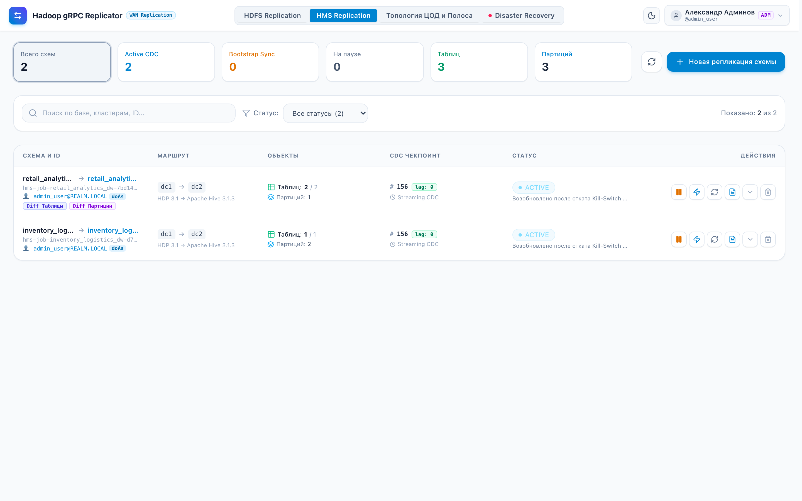
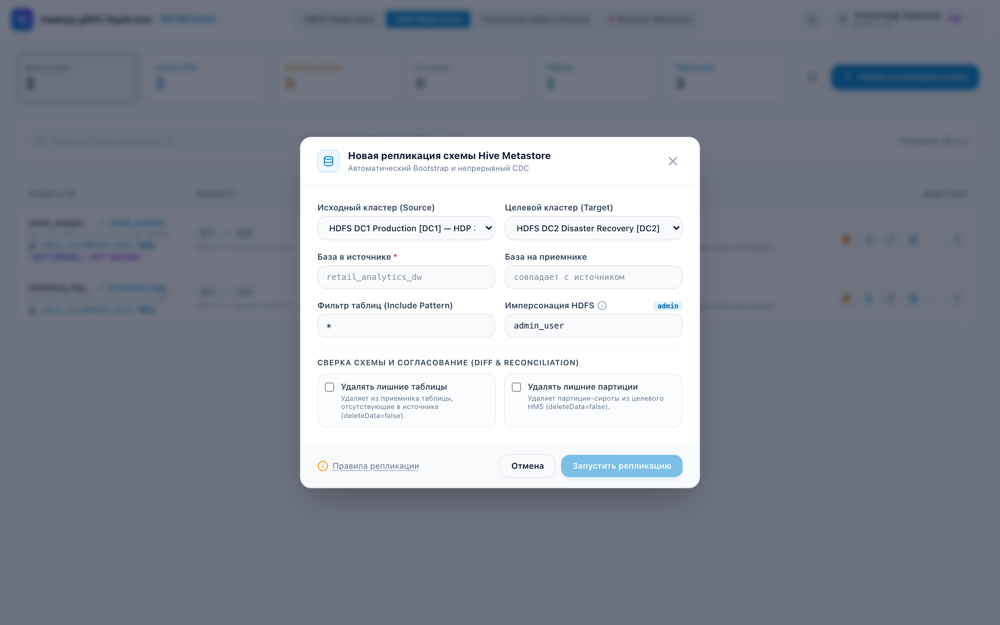
Проблема Split-Brain и риск деструктивной перезаписи данных
Почему простое снятие сетевой блокировки без защитной логики уничтожает данные компании
5-фазный регламент Disaster Recovery (RPO → 0, RTO < 5 мин)
Четкий сквозной алгоритм действий системы и оператора на протяжении всего инцидента
| Фаза регламента | Состояние DC1 | Задачи DC1 ➔ DC2 | Лимит канала | Действия оператора и системы |
|---|---|---|---|---|
| 1. Авария DC1 (Kill-Switch) | DOWN / FENCED | `STOPPED` (Cron OFF) | 0 МБ/с | Кнопка 🛑 Kill-Switch. Сетевой барьер 0 МБ/с, freeze задач, фиксация Snapshot состояния. |
| 2. Работа на DR площадке | OFFLINE | `STOPPED` | 0 МБ/с | Бизнес-приложения пишут в DC2. На панели накапливается Delta Lag (непереданные байты и DDL). |
| 3. Оживание DC1 (Unfence) | ALIVE (STANDBY) | `STOPPED` (Защищены!) | 100 МБ/с | Кнопка 🛡️ Снять изоляцию. Восстанавливается ТОЛЬКО сеть. Старые задачи НЕ запускаются! |
| 4. Догон дельты (Reverse) | RECEIVER | `STOPPED` | 100 МБ/с | Кнопка 🔄 Reverse Replication. Авто-генерация зеркал `rev-*` (`DC2 ➔ DC1`) до достижения RPO = 0. |
| 5. Возврат нагрузки (Failback) | PRIMARY | `SCHEDULED` | 100 МБ/с | Переключение трафика на DC1. Отзыв временных зеркал («Отозвать ↩»). Возобновление штатного цикла. |
DR Hub, аварийный Kill-Switch и сетевое ограждение
Наглядный мониторинг топологии и изоляция упавшей площадки в один клик
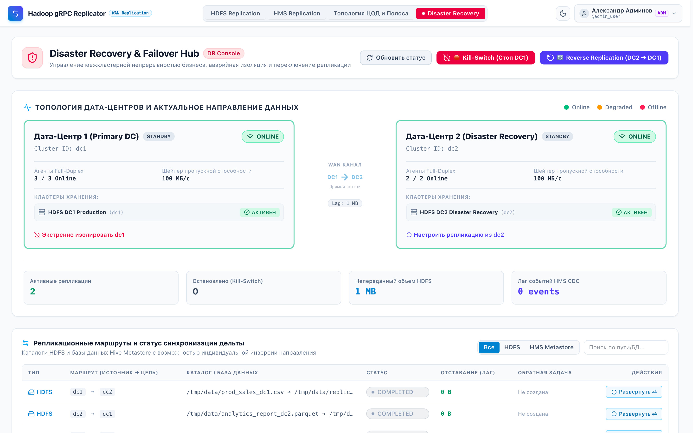
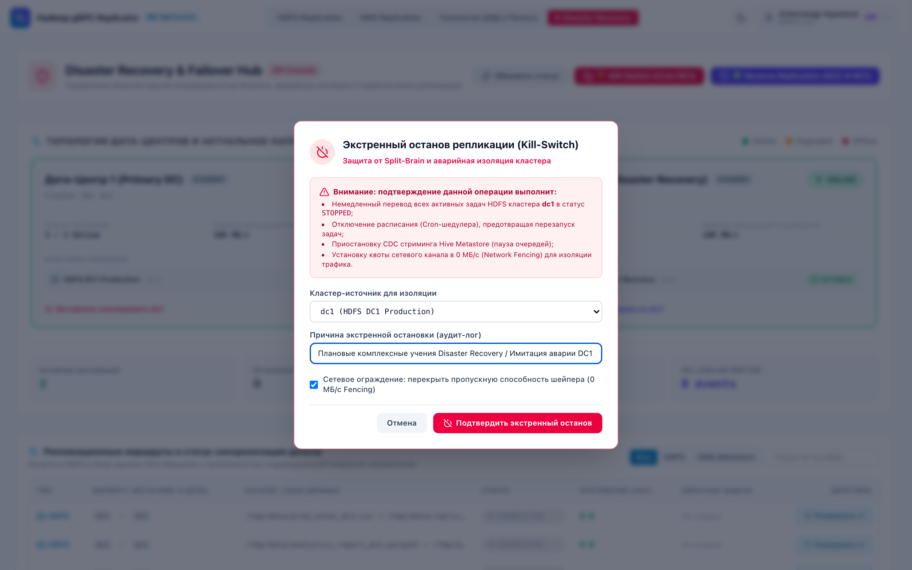
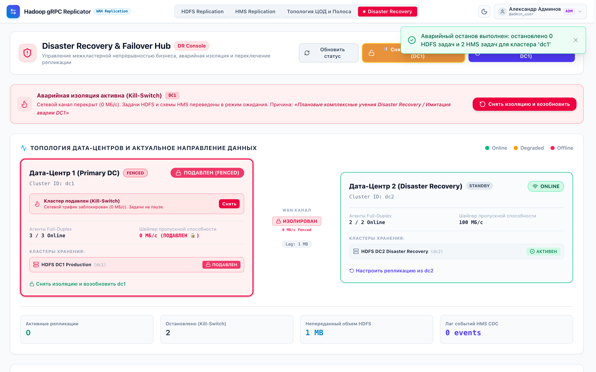
Безопасное снятие изоляции (Unfence) и Reverse Replication
Защита от случайных действий и автоматическая генерация встречных задач синхронизации дельты
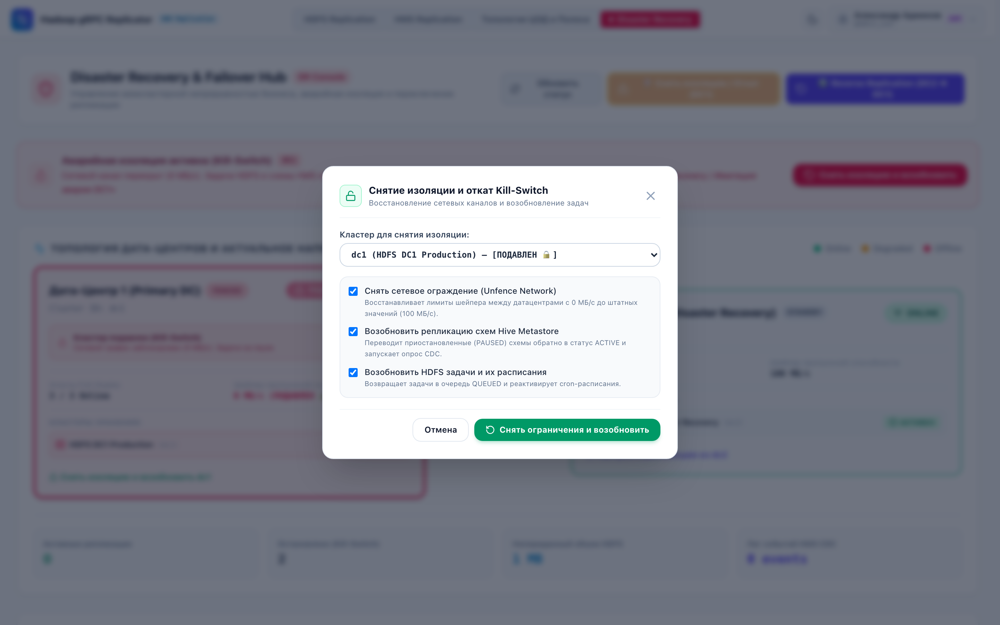
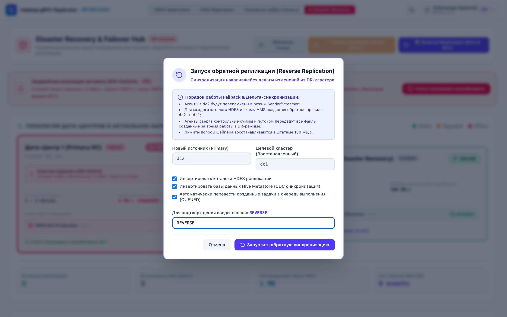
Безопасность, Kerberos Context Isolation и Apache Ranger
Полное соблюдение корпоративных политик безопасности банковского и телеком-сектора
Воркер аутентифицируется через системный keytab техучетки `hdfs-replicator@REALM.LOCAL`, однако все операции в HDFS выполняются под UGI автора задачи:
UserGroupInformation.createProxyUser(user, baseUgi).doAs(...)
Это гарантирует, что пользователь не сможет скопировать директории, к которым у него нет прямого доступа в Hadoop!
При проверке политик Ranger фиксирует реальное имя создателя задачи репликации:
- Ranger Access Log: `ugi: ivan_ivanov (auth:PROXY via hdfs-replicator)`;
- Прозрачный аудит действий для службы информационной безопасности;
- Невозможность несанкционированного повышения привилегий.
Защита канала передачи блоков DataNode по сети:
- Автоматическая конфигурация SASL защиты (`dfs.data.transfer.protection = integrity/privacy`);
- Исключение сбоев `Connection reset` при передаче данных между Kerberized-узлами.
- Шифрование управляющих REST API эндпоинтов по HTTPS;
- Шифрование gRPC-магистрали между воркерами и приемниками;
- Поддержка взаимной аутентификации по сертификатам (mTLS).
Сравнение с альтернативными решениями на рынке
Почему Hadoop gRPC Replicator превосходит существующие Open Source и коммерческие аналоги
| Возможность | Apache DistCp | Apache Falcon | WANdisco Fusion | Hadoop Replicator |
|---|---|---|---|---|
| Нагрузка на YARN | ❌ Высокая (MapReduce) | ❌ Высокая (Oozie/MR) | ✅ Свой демон | ✅ Zero YARN |
| Иерархический шейпер полосы | ❌ Нет | ❌ Нет | ⚠️ Частичный | ✅ 3 уровня (< 1c) |
| Tar-Streaming мелких файлов | ⚠️ Лимитирован | ❌ Нет | ⚠️ Задержки | ✅ Потоковый Tar |
| CDC Hive Metastore | ❌ Нет | ⚠️ Только DDL скрипты | ⚠️ Сложный плагин | ✅ Inotify Lease HA |
| Защита от Split-Brain в DR | ❌ Ручная (Риск потери) | ❌ Ручная | ⚠️ Консенсус Paxos | ✅ Fencing + Reverse |
| Веб-интерфейс и мониторинг | ❌ Только YARN UI | ❌ Устаревший UI | ⚠️ Тяжелый портал | ✅ Svelte 5 SPA |
| Стоимость владения | Бесплатно | Архив (EoL) | ❌ $100k+ / год | ✅ Своя разработка |
Эксплуатация, мониторинг Prometheus и Smoke-тестирование
Полная прозрачность для инфраструктурных команд и дежурной смены
Эндпоинт `:8005/actuator/prometheus`:
- `replication_bytes_total`
- `active_workers`
- `replication_transfer_rate_mb_s`
- `hms_replication_event_lag`
- `fenced_clusters_count`
Стандарты облачного развертывания:
- `/actuator/health/liveness`
- `/actuator/health/readiness`
- Автоматическая интеграция с Kubernetes Ingress и HAProxy.
Скрипт `./demo/replicator/run-smoke-tests.sh`:
- Подъем 2 изолированных Hadoop ЦОД;
- Верификация HDFS репликации;
- Проверка Hive CDC при вставке партиций;
- Контроль хэшей SHA-256.
Итоги и готовность к демонстрации
Hadoop gRPC Replicator переводит управление межкластерной репликацией на новый уровень
- Нулевое влияние репликации на YARN-очереди;
- Защита критического корпоративного WAN-канала;
- RPO ➔ 0 и RTO < 5 минут при катастрофе ЦОД;
- Полная синхронизация метаданных Hive.
- Современный стек Java 21, Spring Boot 3, Netty;
- Zero-Staging и Tar-Streaming мелких файлов;
- Бесшовный откат с защитой от Split-Brain;
- Простой и удобный интерфейс Svelte 5.
Спасибо за внимание!
Готовы перейти к вопросам и демонстрации живого стенда